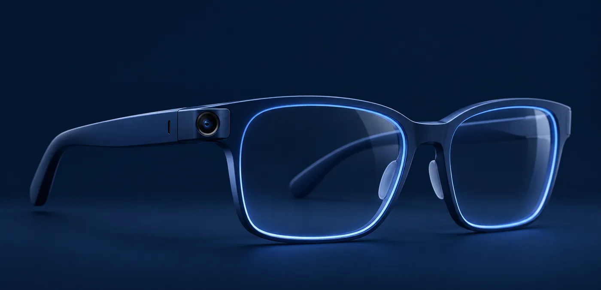

Ilustración conceptual · no es el diseño finalTecnología para ver por quien no ve.
Aquí empezó Alba. UNBLIND lee, describe y ubica lo que tienes enfrente, en el teléfono o en unos lentes con cámara, y se usa con la voz.
En desarrolloConoce UNBLIND